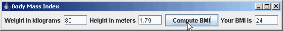

Java: Body Mass Index (BMI)

The Body Mass Index program is divided into two files, the main program is in one file, and the GUI and logic are in another. They could also be in one file, but it is usually easier to work on them when they are in separate files.
The BMI main program
1 2 3 4 5 6 7 8 9 10 11 12 13 14 15 16 17 18 19 20 21 22 23 24 25 26 27 28 29 |
// File: bmi/BMI.java
// Description: Compute Body Mass Index = kg/(m*m)
// BMI is regarded as a measure of "fatness", with
// numbers less than 25 considered good. Of course,
// this is really a rough approximation.
// Weight must be in kilograms and hight in meters.
// Author: Fred Swartz
// Date : 2005-02-07
// Other : Level : Introductory.
// Structure : Two files, main in one,
// GUI and logic as subclass of JPanel in another.
// Components: JButton, JTextArea
// Containers: JFrame, JPanel
// Layouts : FlowLayout
// Listeners : ActionListener as inner class.
import javax.swing.JFrame;
//////////////////////////////////////////// class BMIclass BMI {
class BMI {
//======================================== static method main
public static void main(String[] args) {
JFrame window = new JFrame("Body Mass Index");
window.setDefaultCloseOperation(JFrame.EXIT_ON_CLOSE);
window.setContentPane(new BMIPanel());
window.pack();
window.setVisible(true);
}
}
|
BMI GUI and logic
1 2 3 4 5 6 7 8 9 10 11 12 13 14 15 16 17 18 19 20 21 22 23 24 25 26 27 28 29 30 31 32 33 34 35 36 37 38 39 40 41 42 43 44 45 46 47 48 49 50 51 52 53 54 |
// File: bmi/BMIPanel.java
// Description: GUI and Logic for computing Body Mass Index
// Author: Fred Swartz
// Date: 2005-02-07
// Problems: No error checking
import java.awt.*;
import java.awt.event.*;
import javax.swing.*;
import javax.swing.event.*;
///////////////////////////////////////////////////////// class BMIPanel
class BMIPanel extends JPanel {
//----------------------------------------------- instance variables
// Declare and initialize instance variables that are
// referred to when the program is running.
private JTextField m_mField = new JTextField(4); // height
private JTextField m_kgField = new JTextField(4); // weight
private JTextField m_bmiField = new JTextField(4); // BMI
//====================================================== constructor
BMIPanel() {
//... Create button and add an action listener
JButton bmiButton = new JButton("Compute BMI");
bmiButton.addActionListener(new BMIListener());
//... Set layout and add components.
this.setLayout(new FlowLayout());
this.add(new JLabel("Weight in kilograms"));
this.add(m_kgField);
this.add(new JLabel("Height in meters"));
this.add(m_mField);
this.add(bmiButton);
this.add(new JLabel("Your BMI is"));
this.add(m_bmiField);
}
//////////////////////////////////////////////// inner class listener
// Inner class is used to easily access components.
// BMI is converted to int to eliminate excess "accuracy".
private class BMIListener implements ActionListener {
public void actionPerformed(ActionEvent e) {
double kilograms = Double.parseDouble(m_kgField.getText());
double meters = Double.parseDouble(m_mField.getText());
int bmi = (int)computeBMI(kilograms, meters);
m_bmiField.setText("" + bmi);
}
}
//=========================================== logic method computeBMI
public static double computeBMI(double weight, double height) {
return weight / (height*height);
}
}//end class BMIPanel
|
Notes
Typical pattern for simple programs
The BMI program shows a typical pattern used to make a one-window program with components. This is built from Example - Generic Calc prototype by adding fields, renaming, and changing the calculation.
BMI class
A class with only a main program in it is a good way to clearly separate creation of the window (a JFrame) from the window contents (BMIPanel).
A subclass of JPanel
JPanel is the Java class that implements a panel
where we can put our components for display.
The idea of a subclass (BMIPanel) is that it can do everything its parent
class (JPanel) can do, and more. The JPanel class knows
only how to make a default background. Our subclass inherits
the background painting, and adds components to it.
Instance/field variables
Variables that are declared in the class, but not in a method or constructor are called instance, field, or member variables, depending on the author. The lifetime of these variables is the lifetime of the object, unlike local variables which disappear when the method or constructor returns. It's necessary to use instance variables for anything you need to refer to by name during execution (ie, in the listeners). The convention of prefixing instance variables with an underscore ("m_") is used in this program.
Declare instance variables for things that will be referred to when the program is running, ie after the constructor has built the interface. Typically these include:
- Components such as text fields or text areas that contain information that you will
get or set. Normally, you would not declare labels or buttons as instance variables; they can be local
variables or even just expressions in the constructor if your program never
refers to them after the interface has been constructed.
Altho local variables disappear when a constructor or method returns, buttons and labels have been added to panel, which saves their values. If you need to refer to a button to enable or disable it, it should also be an instance variable.
- Variables that hold values that are needed as part of the problem. These are values that must remain between interactions with the user, not just temporary calculations.
The button listener
The button listener gets the strings the user typed in the text fields, converts them to numbers, computes a result, and displays the result, converted to string, in another text field.
Happy Trails programming
A problem with this code is that it doesn't check for legal values. Checking isn't difficult, but it would make this simple example more complicated. In industrial strength programs checking for valid input and error conditions can take a surprisingly large percent of the total code. Student examples often omit error checking, but see Strings to Numbers for how to check for legal number conversions.
Separating Logic and Presentation
Ideally, the code that implements the core model of the
problem (the BMI computation in this case) should be split from
the presentation of the interface.
If the logical model for the computation required saving values (its state),
it would be better to put it
in its own class, the computation of BMI can be done as a pure method
(computeBMI() - defined at the
bottom of the BMIPanel class. A good rule of thumb is to
structure the model code so that it could easily
be used by a command line mode interface or called by another program.
If you always make some effort to separate logic and presentation,
you will be moving in the direction of the ideal MVC (Model, View, Controller)
pattern.
OPTIONAL - Formatting the double value
If you want to display the BMI value as a floating point number, you will discover that the default conversion to string sometimes produces many digits after the decimal point. The solution is to use a java.util.DecimalFormat object to format the output to one (or however many you wish) decimal place. The DecimalFormat object has a format() method which takes a number and returns a String formatted as requested. See Number to String Conversion.
Changes to BMIPanel
// Add this import to get the DecimalFormat class. import java.text.DecimalFormat; . . . // Create this instance variable DecimalFormat m_resultFormat = new DecimalFormat("0.0"); . . . // Assign result to a double without casting to int. double bmi = computeBMI(kilograms, meters); // Format the double with the resultFormat object. m_bmiField.setText(m_resultFormat.format(bmi)); . . .
How should resultFormat be declared?
The declaration for m_resultFormat above was
as an instance variable, but there is nothing "variable" about
it. Because it never changes, it should be declared
as a constant using final.
Because there only needs to be one copy, it should
be declared static, and because we want to be able
to change this without affecting other programs, we should
make it private. Ie,
private static final DecimalFormat RESULT_FORMAT = new DecimalFormat("0.0");
Of course, it's inconceivable that another program will use this class, so declaring it private is overkill, but it's a good habit to establish.
OPTIONAL - Catching errors with try...catch
Catching conversion errors
Most student programs don't check for most error conditions. Perhaps this is appropriate because there is only limited time in a course. However, it isn't the way "real" programs should be written. If a user types input that isn't a number into one of the BMI text fields, the program should produce an error message, not crash. This suggested improvement is a good illustration of how exceptions are used for error checking.
The try...catch statement (See Exceptions)
in the button listener
catches the NumberFormatException that
Double.parseDouble() throws if the input
is not something that can be converted to double.
Changes to BMIPanel
. . .
private class BMIListener implements ActionListener {
public void actionPerformed(ActionEvent e) {
//... Enclose code that might throw an exception in try clause.
try {
double kilograms = Double.parseDouble(m_kgField.getText());
double meters = Double.parseDouble(m_mField.getText());
int bmi = (int)computeBMI(kilograms, meters);
m_bmiField.setText("" + bmi);
} catch (NumberFormatException ex) {
m_bmiField.setText("Bad Input");
}
}
}
. . .
There are a number of ways so indicate an error to the user: Put an error message in an input or output field as above, beep, show an error dialog, ...
Extensions to the BMI program
The following are possible extensions to the BMI program.
- Change to English units. Use English units (inches and pounds)
for input..
Note: BMI must be calculated in metric units, so English input values must be converted to metric units to solve the problem. Assume there are 0.454 kilograms per pound and 0.0254 meters per inch.
- Give health advice.
Based on the BMI values, make some commentary.
Write another method which takes a BMI value and returns a string comment on the number. Call this method after calling the
computeBMImethod. Use aJOptionPaneto deliver the message. See JOptionPane - Simple Dialogs. - Add error checking.
Use
ifstatements to test for unreasonable and illegal values.